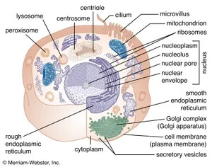

What is the living being made up of?
Living organisms on Earth come in various species with different structures, including archaebacteria, Chlamydomonas, fungi, plants, animals, birds, eubacteria, and amoeba. These organisms are made up of microscopic units called cells, which are the basic structural and functional units of life.
All cells share key characteristics: they contain DNA for genetic inheritance, are surrounded by a plasma membrane, and use similar mechanisms for energy metabolism.
Some organisms are unicellular, meaning they consist of a single cell capable of self-replication, such as yeast, bacteria, protozoa, and fungi. In contrast, multicellular organisms are more complex, with multiple types of specialized cells that work together to support the organism's function and lifespan.

Fig.1 Structure of a cell
Discovery of Cells
The first cell was discovered by English scientist Robert Hooke in 1665. While examining a thin slice of cork under a microscope, he observed that it resembled a honeycomb structure with small compartments. He referred to these compartments as "cells." This discovery was significant because it suggested that living organisms were made up of smaller, structured units. Hooke's findings were published in his book Micrographia in 1665.

Fig.2 Dead cork cells as seen by Robert Hooke
In 1674, Anton von Leeuwenhoek, a Dutch microscopist, made an improved microscrope and discovered the free living cells in pond water for the first time.
Cell Theory
The cell theory, a cornerstone of biology, developed through contributions from key scientists:
- Jakob Matthias Schleiden (1838): Proposed that all plants consist of cells.
- Theodor Schwann (1839): Asserted that both animals and plants are made of cells, establishing the foundation of cell theory.
- Rudolf Virchow (1855): Added that all cells arise from pre-existing cells.
Postulates of Cell Theory:
- All organisms are made of cells and their products (e.g., secretions).
- Cells are the structural and functional units of life, where all metabolic reactions occur.
- All cells originate from pre-existing cells through division; spontaneous generation does not occur.
- Every organism begins as a single cell.
Exception: Viruses do not conform to cell theory.
Summary
Exercise Questions
- What are the basic structural and functional units of life in living organisms?
- Which organisms are included in the diverse species found on Earth?
- What key characteristics are shared by all cells?
- What is the role of DNA in cells?
- What surrounds all cells to provide a boundary?
- How do cells manage their energy requirements?
- What is the difference between unicellular and multicellular organisms?
- Name some examples of unicellular organisms.
- How do multicellular organisms differ in complexity compared to unicellular organisms?
- Who discovered the first cell, and in which year?
- What material was Robert Hooke examining when he discovered cells?
- What term did Robert Hooke use to describe the compartments he observed?
- Why was Hooke’s discovery significant to the understanding of living organisms?
- In which book did Robert Hooke publish his findings?
- Who discovered free-living cells in pond water, and when?
- What technological advancement helped Anton von Leeuwenhoek make his discovery?
Robert Hooke